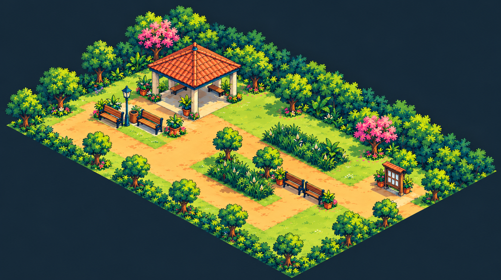
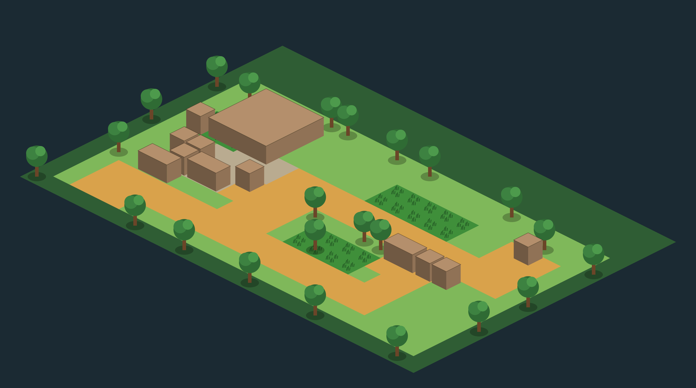

Jardim das Pipas e Clareira do Papel: mesma família visual, lugares com personalidades distintas. Estudos de acabamento para revisão; posições e alinhamento ainda precisam de refinamento.


Diretriz e pendências · Prompts e origem